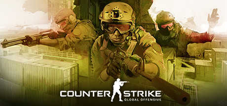

Counter-Strike: Global Offensive (CS:GO) is a multiplayer first-person shooter video game developed by Hidden Path Entertainment and Valve Corporation. It is the fourth game in the Counter-Strike series and was released for Microsoft Windows, OS X, Xbox 360, and PlayStation 3 in August 2012, with the Linux version released in September 2014. The game pits two teams against each other: the Terrorists and the Counter-Terrorists. Both sides are tasked with eliminating the other while also completing separate objectives, the Terrorists, depending on the game mode, must either plant the bomb or defend the hostages, while the Counter-Terrorists must either prevent the bomb from being planted, defuse the bomb, or rescue the hostages. There are eight game modes, all of which have distinct characteristics specific to that mode.
Global Offensive, like prior games in the Counter-Strike series, is an objective-based, multiplayer first-person shooter. Two opposing teams, known as the Terrorists and the Counter Terrorists, compete in game modes to complete objectives, such as securing a location to plant or defuse a bomb and rescuing or guarding hostages. At the end of each round, players are rewarded based on their individual performance with in-game currency to spend on more powerful weapons in subsequent rounds. Winning rounds results in more money than losing, and completing objectives such as killing enemy players gives cash bonuses. Uncooperative actions, such as killing teammates, results in a penalty.
Previous Counter-Strike games :